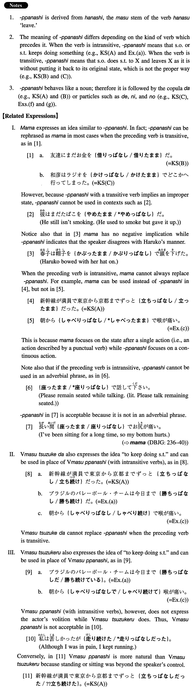

←
DoJG
→
っぱなし
(I. 333)
Example sentences
(ksa).
新幹線が満員で東京から京都までずっと立ち
っぱなし
だった。
The Shinkansen was so crowded that I stood all the way (literally: kept standing) from Tokyo to Kyoto.
(ksb).
友達にまだお金を借り
っぱなし
だ。
I borrowed money from a friend of mine and still haven't paid it back.
(ksc).
和彦はラジオをかけ
っぱなし
でどこかへ行ってしまった。
Kazuhiko went out, leaving his radio on.
(a).
ブラジルのバレーボール・チームは今日まだ勝ち
っぱなし
だ。
Brazil's volleyball team hasn't lost a game up to now. (literally: Brazil's volleyball team has been winning up to today.)
(b).
今日は朝から電話が鳴り
っぱなし
だ。
The telephone has been ringing since this morning (literally: since morning today).
(c).
朝からしゃべり
っぱなし
で喉が痛い。
I have been talking since this morning and my throat is sore.
(d).
車のヘッドライトを一晩中つけ
っぱなし
だったのでバッテリーが上がってしまった。
Because I left my car headlights on all night, the battery died.
(e).
光子は水を出し
っぱなし
で友達と電話で話している。
Mitsuko is talking with her friend on the phone while leaving the water running.
(f).
茂はやかんをコンロにかけ
っぱなし
にして出て行った。
Shigeru went out somewhere leaving a kettle on the stove.
(g).
開け
っぱなし
の窓から蚊が沢山入ってきた。
Many mosquitoes came in through the window which was left open.
Formation
Vます
っぱなし
座り
っぱなし
(volitional) have been sitting
つけ
っぱなし
(volitional) leave something on
